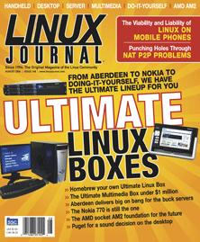

Shutdown Archive web server
Search:
Linux Journal
Issue #148/August 2006

Features
The Ultimate Do-It-Yourself Linux Box
by Nicholas Petreley
How to start with the ultimate motherboard and build yourself your own Ultimate Desktop.
The Ultimate Linux Desktop
by Dee-Ann LeBlanc
The Ultimate Desktop doesn't come cheap, but you'll get what you pay for.
The Ultimate Linux Server
by Nicholas Petreley
Want a quad-processor server with performance and reliability for an amazingly reasonable price?
The Ultimate Multimedia Center(s)
by Jon “maddog” Hall and Clay Claiborne
How do you create an Ultimate Linux Multimedia Center for less than a million dollars?
The Ultimate Linux Handheld
by Doc Searls and Jim Thompson
Nothing beats the flexibility and expandability of this Linux handheld.
The Ultimate Future Linux Box
by Nicholas Petreley
The new AMD socket AM2 processor may not break speed records today, but it is likely to be the foundation for the future.
Indepth
NetDVD: Building a Network-Attached Peripheral with Linux
by Bradford C. Smith
Why equip every PC with storage and DVD writers when you can create an all-purpose network attached peripheral?
Developing P2P Protocols across NAT
by Girish Venkatachalam
Punch some holes in your network in order to make P2P work behind a firewall.
Mobile Phones: the Embedded Linux Challenge
by Bill Weinberg
Linux can be the ultimate embedded operating system if you know the secrets.
Columns
At the Forge
eBay Web Services
by Reuven M. Lerner
Cooking with Linux
Searching for the Ultimate Desktop Enhancements
by Marcel Gagné
Work the Shell
End Game
by Dave Taylor
Paranoid Penguin
An Introduction to Novell AppArmor
by Mick Bauer
Beachhead
No Shoes, No Shirt, No Problem!
by Jon “maddog” Hall
Linux for Suits
Progress Report toward Independent Identity
by Doc Searls
/var/opinion
Postscripts on the Ultimate Linux Boxes
by Nicholas Petreley
In Every Issue
Letters
UPFRONT
New Products
Archive Index
Shutdown Archive web server
Search:
Copyright © 1994 - 2018
Linux Journal
. All rights reserved.